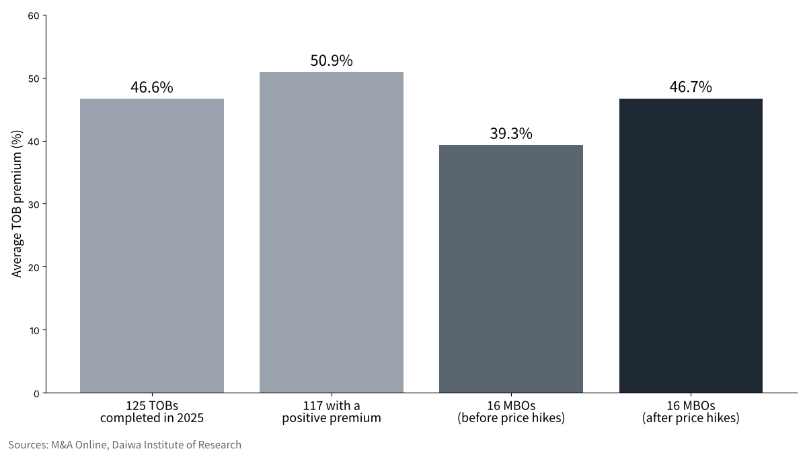

Japan’s takeover premiums average 46.6%. Are take-privates with activist investors priced higher? Testing 125 tender offers and 16 MBOs from 2025, and the Toyota Industries price hike
Activist investors in Japan are more active than ever, and more companies are leaving the stock market. According to Tokyo Shoko Research, 80 tender offers aimed at delisting and 32 management buyouts (MBOs) were announced in 2025, 112 companies in total.
In a take-private, the buyer pays a price above the market price. The extra amount is called the premium. Activist investors often say this price is too low.
The question here: are take-privates with activist investors involved priced at higher premiums?
- The 125 tender offers completed in 2025 carried an average premium of 46.64%; for the 117 with a positive premium, the average was 50.88%.
- Among 16 MBOs announced from June to November 2025, the average premium rose 7.4 points, from 39.3% before price hikes to 46.7% after. Most hikes followed shareholder opposition.
- At Toyota Industries, the offer rose 26.4%, from ¥16,300 to ¥20,600 per share, after Elliott opposed it. On average activists add a few points; in a single deal they can move the price by more than 20%.

Question and background
First, the terms. A tender offer (TOB) is a way to buy shares from shareholders outside the market, with a set period and price. In a take-private, the buyer then squeezes out the remaining shareholders and delists the company.
The premium shows how far the offer price exceeds the share price before the announcement. If the stock was ¥1,000 and the offer is ¥1,500, the premium is 50%. The reference price can be the previous day’s close or a one- or three-month average.
Activist investors buy shares and then ask the company for higher dividends or a different use of capital. The Japan Research Institute lists five traits of likely targets: a low price-to-book ratio, little debt, a lot of cash, small holdings by financial institutions and large holdings by foreign investors.
Behind the rise in take-privates are the Tokyo Stock Exchange’s 2023 request for management that is conscious of the cost of capital and share price, and stricter listing standards. According to Daiwa Institute of Research, 94 companies left the TSE in 2024, a record. Dealing with activists has become one of the costs of staying listed.
Data and method
We use four sources. First, M&A Online’s average premium for 125 tender offers launched and completed in 2025, excluding unlisted targets. Second, Daiwa Institute of Research’s review of 16 MBOs announced from June to November 2025, which reports averages before and after price hikes.
Third, Tokyo Shoko Research’s survey of 2025 tender offers and MBOs aimed at delisting, which shows the type of buyer and the failed deals. Fourth, the Toyota Industries take-private as a large single case.
We could not find a public dataset that splits deals by whether an activist was a shareholder and compares the averages directly. Instead, we use the size of price hikes as a gauge of how much opposition from activists and other shareholders moved prices.
Results
| Measure | Value | Source |
|---|---|---|
| Average premium, 125 tender offers completed in 2025 (excl. unlisted) | 46.64% | M&A Online |
| Average of the 117 with a positive premium | 50.88% | M&A Online |
| 16 MBOs (Jun–Nov 2025), before price hikes | 39.3% | Daiwa Institute of Research |
| Same, after price hikes | 46.7% | Daiwa Institute of Research |
| Tender offers and MBOs aimed at delisting in 2025 | 112 companies (80 TOBs, 32 MBOs) | Tokyo Shoko Research |
| Of which the buyer was a fund (incl. activists) | 22 (about 30%) | Tokyo Shoko Research |
| Toyota Industries offer price | ¥16,300 → ¥20,600 (+26.4%) | Reports and filings |
The average premium for the 125 tender offers completed in 2025 was 46.64%. For the 117 deals with a positive premium, it was 50.88%. Taking a listed Japanese company private in 2025 typically meant paying about half again over the market price.
Among Daiwa’s 16 MBOs, the average premium was 39.3% before price hikes and 46.7% after, a rise of 7.4 points. As of January 2026, 12 had succeeded, 2 had failed and 2 had extended their offer periods.

The failed deals show activists at work. According to Tokyo Shoko Research, Soft99 Corporation and Wavelock Holdings were asked by existing shareholders and activists to raise their MBO prices, and both failed when tenders fell short of the minimum. At Soft99, a fund then launched a competing tender offer that did not aim to delist the company, and it succeeded.
The largest single move came at Toyota Industries. In June 2025 a take-private was proposed at ¥16,300 per share, initially below the market price. After opposition from Elliott Management, the price was raised to ¥20,600, an increase of 26.4%. The tender offer succeeded in March 2026, and at about ¥5.9 trillion it was the largest M&A deal between Japanese companies on record.
In Tokyo Shoko Research’s survey, 5 of the 112 companies that announced tender offers or MBOs aimed at delisting in 2025 failed. That is less than 5%, but it includes deals where shareholder opposition made the price the issue. If the price is too low, the take-private itself can fall apart.
Why prices get raised
In an MBO, management is the buyer, and its interests clash with the shareholders who sell. Daiwa notes that procedures to show fairness, such as special committees of outside members and independent share valuations, have become standard. Even with these procedures in place, complaints about the price itself do not disappear.
According to Daiwa, even in deals with high premiums of 45–50%, companies that set the offer below a price-to-book ratio of 1 drew criticism from ordinary shareholders over whether the price was fair. A large premium over the market price can still be below the company’s net assets, and shareholders then feel they are being bought cheaply. This is usually the point activists press on.
In Tokyo Shoko Research’s survey, the most common buyers in 2025 tender offers were funds, including activists, at 22 companies, or about 30%. Funds stand both on the side that speaks up about price as shareholders and on the side that sets the price as buyers. Take-private prices are set through this kind of bargaining.
Sensitivity analysis
How much activists move prices varies widely by deal. Here we assume a 40% premium at announcement and calculate three cases of price hikes after opposition.
With no hike, shareholders receive a 40% premium. If the price rises about 5.3%, as in the average of Daiwa’s 16 deals, the premium over the pre-announcement price becomes about 47%. If it rises 26.4%, as at Toyota Industries, the premium widens to about 77%.
On average the activist effect is a few points. Deal by deal, the cheaper the initial price, the more room opposition has to move it. Toyota Industries, priced below the market at first, was the extreme case.
Limitations
First, we could not use statistics that split deals by whether an activist was on the shareholder register. Price hikes also reflect ordinary shareholders and special committees, so the size of a hike cannot be read as the activist effect alone.
Second, sources measure the premium against different reference prices, such as the previous close or a three-month average. Where the stock had already risen before the announcement, the premium looks smaller.
Third, failed deals and deals that were never announced are not in the averages. If some companies gave up on going private because activists demanded higher prices, that does not show up in the numbers.
Conclusion
In 2025, taking a Japanese company private typically meant paying about 50% over the market price. In MBOs, shareholder opposition raised the average premium by about 7 points, and in deals like Toyota Industries the price moved by more than 20%. The data do not yet allow us to say firmly that take-privates with activists are priced higher. Still, the path by which opposition pushes prices up can be seen in the numbers.
For shareholders of a listed company, a take-private is an event in which they cannot choose when to sell. If the offer looks cheap against book value or the market price, they can choose not to tender. For owners of unlisted businesses, freedom from this pressure is one reason not to list at all.
References
- Tokyo Shoko Research, 112 companies in delisting tender offers and MBOs in 2025 (Japanese) https://www.tsr-net.co.jp/data/detail/1202318_1527.html
- Daiwa Institute of Research, Features of recent MBOs, Jan 27, 2026 (Japanese) https://www.dir.co.jp/report/consulting/ma_valuation/20260127_025531.pdf
- M&A Online, TOB premium ranking 2025 (Japanese) https://maonline.jp/db/tob/2025/ranking_premiere
- Japan Research Institute, Activist trends and listed companies, Apr 23, 2026 (Japanese) https://www.jri.co.jp/report/researchfocus/detail/16651/
- Daiwa Institute of Research, Rising delistings and activist investors, Mar 3, 2025 (Japanese) https://www.dir.co.jp/report/column/20250303_012229.html
- Dai-ichi Life Research Institute, When your stock becomes an MBO, Jun 8, 2026 (Japanese) https://www.dlri.co.jp/files/asset/617820.pdf
- the-shashi, Toyota Industries take-private (Japanese) https://the-shashi.com/tse/6201/decisions/take-private-toyota-2025/
- Reuters via Newsweek Japan, Japan M&A by foreign buyers at a record (Japanese) https://www.newsweekjapan.jp/articles/-/328158
Charts and top image by YUKI CAPITAL. This article is the author’s own record, not investment advice.
I record my daily numbers and decisions on X.